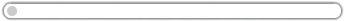

The network norm is an ordered set of surnets (subnet set)
It is displayed with scrolling lists with access to some informations
To display a surnet with its associated subnets, simply click on it.
You can fold or unfold all the list with the functions at the top.
Some surnets could take time to display, so a picture like this ask you to wait 
A surnet is defined by :
A subnet is defined by :
The informations zone, if existing, apperas below the subnet/surnet bar once the user clicked on it.
Right to each surnet name you'll find by clicking on  a module computing available subnets in this surnet.
a module computing available subnets in this surnet.